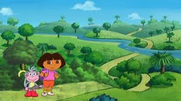

Dora está pronta para uma nova aventura! Hoje, ela vai explorar a Floresta Encantada para encontrar a Árvore dos Desejos, que dizem realizar um desejo para quem a encontrar.
Dora começa a caminhada pela floresta, quando logo chega a uma bifurcação. O que Dora deve fazer?